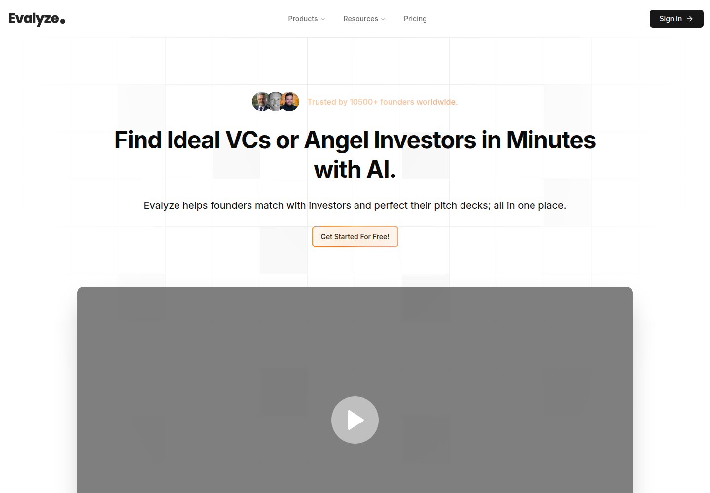
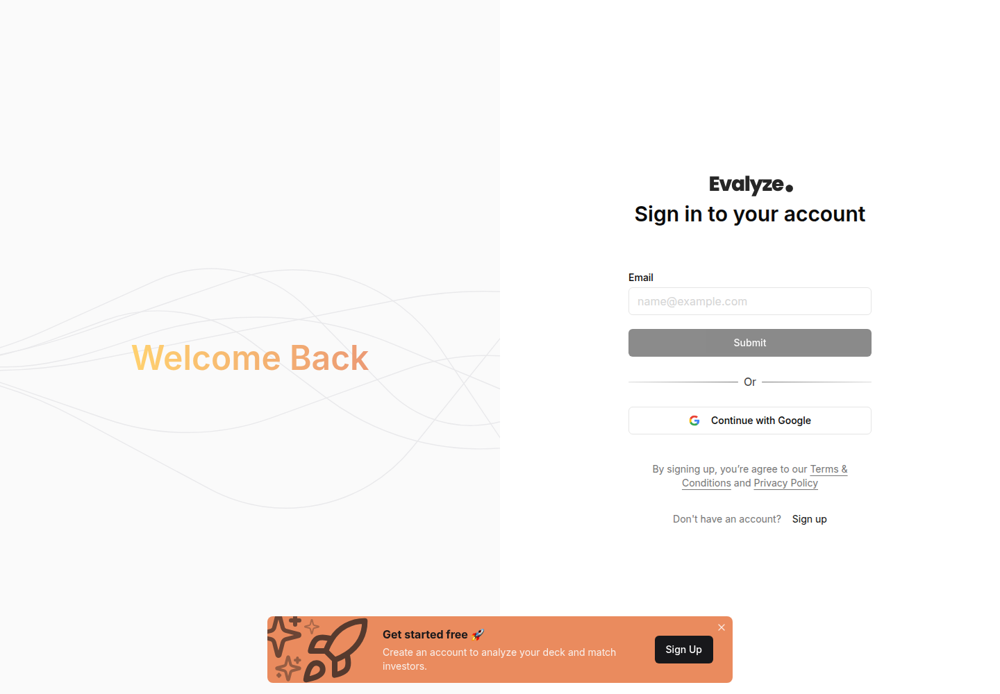
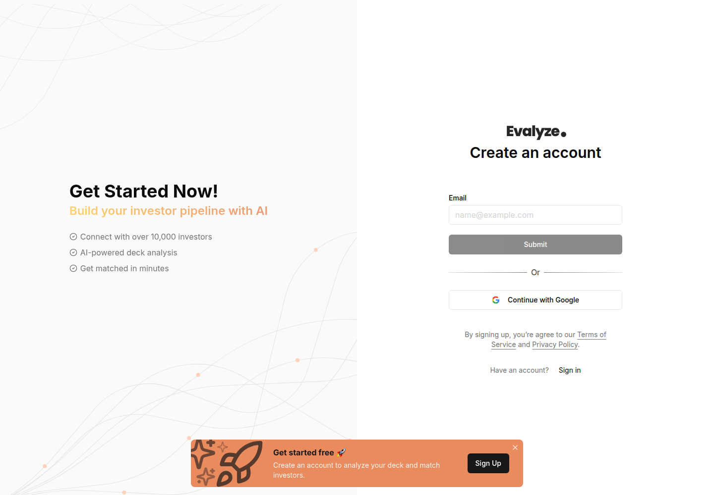
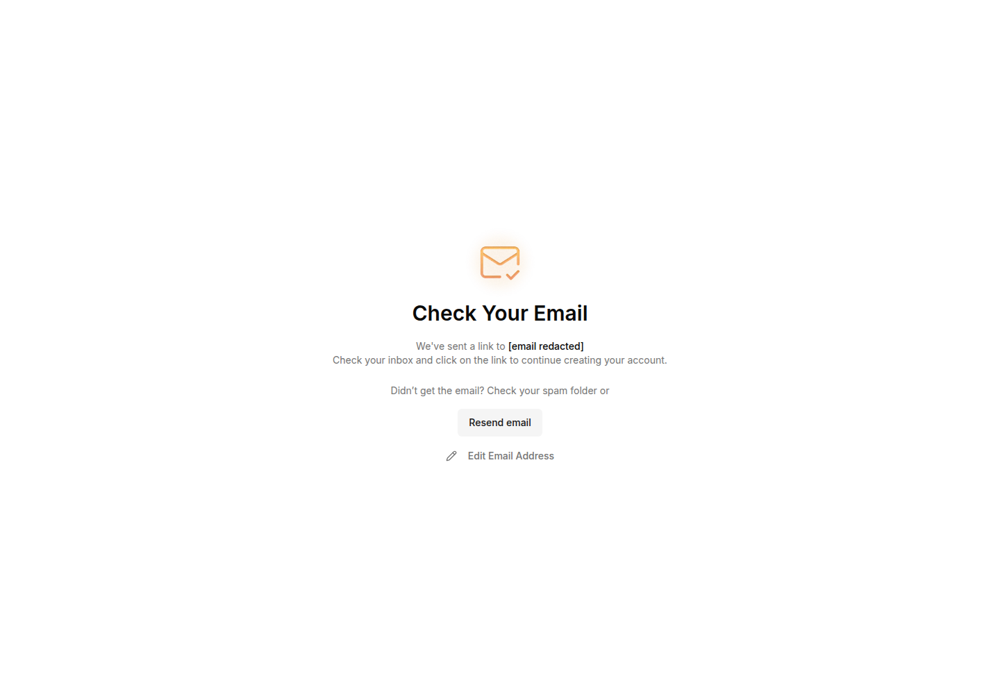
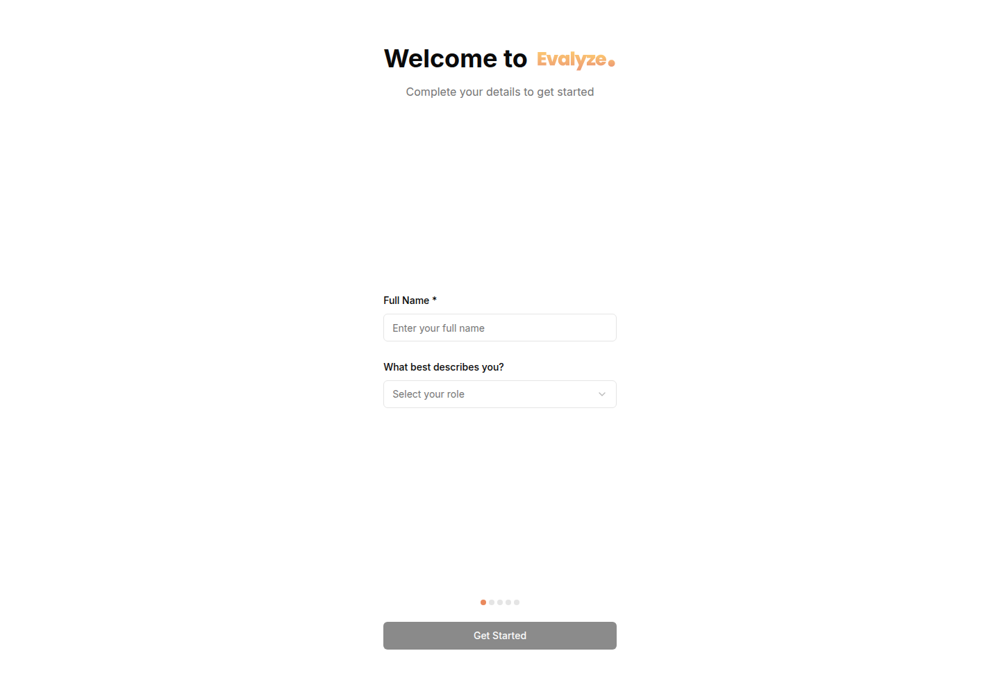

Profile
- Company
- Evalyze
- Url
- https://www.evalyze.ai/
- Source Category
- AI pitch-deck reviewers
- Research Status
- Deep Cited Research / Draft Complete
- Current Status
- live - fetched https://www.evalyze.ai/ directly on 2026-07-19, HTTP 200, active product with dated blog posts through July 9, 2026 and a Dec 2025 PR launch of an 'AI Investor Matching Engine', so the product is actively operating and updating.
- Founded Launch Year
- not found / no public source (no explicit founding year on site, Crunchbase, or press; product referenced as newly launched Investor Matching Engine in Dec 2025 PR, but underlying company/product predates that)
- Company Age
- not found / no public source
- Hq Country
- not found / no public source (no HQ disclosed on site or in press releases found)
- Operating Area
- global (targets founders and investors worldwide; blog covers US, UK, Canada, Germany, France, UAE angel investor lists)
- Target Users
- early-stage startup founders raising pre-seed/seed/Series A capital; secondary audience of angel investors/VCs (12,000+ investor database)
- Product Category
- founder-investor / capital matching; AI pitch/deck review; AI fundraising CRM (in development)
Product Flows
- Swipe Card Interface
- not found / no evidence of swipe gesture UI - Evalyze uses a browsable investor 'profile card' grid with a bookmark icon and a 'Connect' button that opens a detail modal, not a swipe-to-match mechanic. Source: evalyze.ai/blog/how-to-use-evalyze-investor-discovery.
- Mutual Match
- no - it is one-directional discovery/outreach (founder browses and messages investors); no evidence of a mutual opt-in match state
- Ai Matching Scoring
- yes - smart investor matching
- Ai Deck Scoring
- yes - AI deck analysis/investor readiness score
- Founder To Founder Flow
- not found / no evidence - product has no founder-to-founder or cofounder-matching feature
- Founder To Investor Flow
- yes
- Project Profiles
- not applicable / not found - platform is founder+investor only, no separate 'project' entity type
- Messaging Collaboration
- partial - 'Automated Investor Messaging' is listed on the homepage roadmap as '(Soon)', i.e. not live at time of research (2026-07-19)
- Mobile App
- not found / no App Store or Google Play listing located; product appears web-only
- Web App
- yes
Security & Documents
- Nda Gated Unlock
- not found / no explicit NDA-gated unlock mechanism described; FAQ only promises generic confidentiality protection ('How does Evalyze protect my startup's confidential information?'), not a document-unlock-after-signature flow
- Data Room
- not found / no public source
- E Signature
- not found / no public source
- Meeting Prep Ai Briefing
- yes - toughest investor questions
Pricing, Funding & Traction
- Pricing Model
- Freemium: Starter plan Free Forever ($0/month) with AI Startup Analyzer up to 3 decks, AI Investor Matching Campaign (30 investors), limited Investor Discovery, basic Investment Readiness Score, 5 pitch deck uploads (10MB max); paid tiers not itemized on scraped homepage (View All Plans link). Source: evalyze.ai homepage pricing section.
- Business Model
- Freemium SaaS - free tier funds acquisition, paid upgrade tiers monetize deeper investor discovery / matching campaigns / CRM features
- Total Funding
- not found / no public source (no Crunchbase profile, funding announcement, or investor list located; likely bootstrapped or pre-seed/undisclosed)
- Funding Rounds
- not found / no public source
- Investors
- not found / no public source
- Funding Source Type
- not found / no public source
- Last Funding Date
- not found / no public source
- Users Traction
- 'Trusted by 10,500+ founders worldwide' (homepage claim, unverified by third party); runner-up at the DueAI Challenge, 12th Lee Kuan Yew Global Business Plan Competition (Singapore Management University), per testimonial on homepage
- Deals Funding Facilitated
- not found / no public source (no disclosed total capital raised by matched founders)
- Partnerships
- Delta Scale Accelerator (mentioned via testimonial as using Evalyze in mentorship workflow); no other named partners found
- Media Coverage
- Evalyze Launches AI Investor Matching Engine to Help Startups Fundraise Faster - GlobeNewswire/Yahoo Finance/Manila Times syndication, Dec 5, 2025
- Product Update Activity
- active - blog publishing roughly weekly through July 2026 (e.g. July 9, July 6, July 4, 2026 posts); version footer shows 'version: 1.140.0' indicating frequent shipped updates
- Acquisition Rebrand History
- not found / no evidence of acquisition or rebrand
Scores
- Product Overlap Score
- 4
- Feature Maturity Score
- 3
- Market Traction Score
- 2
- Funding Strength Score
- 1
- Ai Depth Score
- 3
- Nda Security Strength Score
- 1
- Network Moat Score
- 2
- Direct Threat Score
- 2.4
- Source Confidence
- Medium
Evidence Notes
- Primary Sources
- https://www.evalyze.ai/
https://www.evalyze.ai/investor-matching
https://www.evalyze.ai/blog/how-to-use-evalyze-investor-discovery
https://www.evalyze.ai/blog/best-platform-to-find-investors
https://www.globenewswire.com/news-release/2025/12/05/3200960/0/en/Evalyze-Launches-AI-Investor-Matching-Engine-to-Help-Startups-Fundraise-Faster.html
https://www.evalyze.ai/blog/evalyze-features
https://www.evalyze.ai/blog/ai-pitch-deck-review - Secondary Sources
- https://finance.yahoo.com/news/evalyze-launches-ai-investor-matching-202600472.html
https://dynamicbusiness.com/ai-tools/evalyze-ai-fundraising-platform-for-startup-founders.html
https://agentlocker.ai/agent/evalyze
https://theresanaiforthat.com/ai/evalyze/ - Unsupported Claims
- '10,500+ founders' and 'Investor Readiness Score' out of 850 are unverified marketing claims with no third-party corroboration found.
- Contradictions
- Original automated pass marked swipe_card_interface=yes; deeper research found a browsable card grid, not a swipe gesture, so this is downgraded/clarified.
- Last Checked
- 2026-07-19
- Notes
- Founder-investor matchmaking + deck scoring tool, not a Founder-Founder/Investor-Project network. No NDA-gated document unlock, no data room, no e-signature, no swipe gesture confirmed. Roadmap items (automated messaging, CRM) are pre-launch, indicating the product is still building toward a fuller flow. Low funding/traction verifiability keeps confidence at Medium.
Registration Flow
Research date: 2026-07-19. Screenshots are sanitized public copies from the private registration-flow capture set; credentials, tokens, verification links/codes, browser chrome, and private identifiers are not intentionally published.
Outcome: account created and email verified.
Stop point: Untouched first onboarding screen after successful first-party email activation, with Full Name empty, role left at 'Select your role', and Get Started disabled; no identity/role details, pitch deck, company data, fundraising application, investor matching request, payment, plan selection, or OAuth permission was submitted
Blocker / boundary: Evalyze's first onboarding step requires a real full name and truthful role classification. The authorized credential file provides an email and site-specific password only, not a full name or authority to classify the user as a founder, fundraising team member, advisor, investor/accelerator, or other role. Because the product and onboarding are fundraising-focused, guessing or selecting a role would violate the evidence-only and fundraising stop conditions.
- Official public homepage. Evalyze's official homepage presents AI investor matching and pitch-deck analysis for founders. A prominent 'Get Started For Free!' action begins the official account flow.
- Login gateway reached from the free CTA. The homepage free-start action first opens Evalyze's sign-in gateway. The page offers email-based sign-in, Google sign-in, terms/privacy links, and a direct Sign up route for users without an account.
- Direct-email account registration. The official registration page requests only an email at this stage, offers direct submission or Google signup, and states agreement to the Terms of Service and Privacy Policy. The empty form was captured before private data was entered; the direct-email route was used and Google OAuth was not opened.
- Email activation requested. After the authorized registration email was submitted once, Evalyze displayed a Check Your Email screen stating that a link had been sent to continue creating the account. The retained screenshot replaces the private address with '[email redacted]' and exposes no verification URL or code.
- Verified account onboarding and stop point. The single official 'Activate your account' message from Evalyze was retrieved through the authorized Gmail API token, and its first-party www.evalyze.ai callback was opened. The browser reached Evalyze's onboarding screen, confirming successful email activation. The untouched first onboarding step asks for a full name and a truthful role classification before enabling Get Started; role options observed in the accessibility tree were Solo founder, Co-founder, Team member helping with fundraising, Advisor or mentor, Investor or accelerator, and Other. The flow stopped without inventing identity or fundraising-role information.




